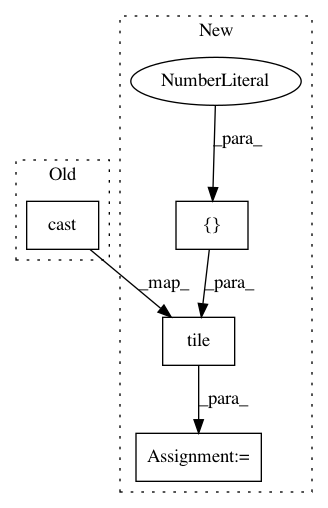

5b25005c58bf9aafbdb781b7370825e826b2a237,official/vision/detection/dataloader/maskrcnn_parser.py,Parser,_parse_train_data,#Parser#Any#,145
Before Change
classes = tf.gather(classes, indices)
if self._include_mask:
masks = tf.gather(masks, indices)
cropped_boxes = boxes + tf.cast(
tf.tile(tf.expand_dims(offset, axis=0), [1, 2]), dtype=tf.float32)
cropped_boxes = box_utils.normalize_boxes(
cropped_boxes, image_info[1, :])
num_masks = tf.shape(masks)[0]
masks = tf.image.crop_and_resize(
After Change
masks = tf.gather(masks, indices)
// Transfer boxes to the original image space and do normalization.
cropped_boxes = boxes + tf.tile(tf.expand_dims(offset, axis=0), [1, 2])
cropped_boxes /= tf.tile(tf.expand_dims(image_scale, axis=0), [1, 2])
cropped_boxes = box_utils.normalize_boxes(cropped_boxes, image_shape)
num_masks = tf.shape(masks)[0]
masks = tf.image.crop_and_resize(
tf.expand_dims(masks, axis=-1),
cropped_boxes,
In pattern: SUPERPATTERN
Frequency: 3
Non-data size: 4
Instances
Project Name: tensorflow/models
Commit Name: 5b25005c58bf9aafbdb781b7370825e826b2a237
Time: 2019-12-04
Author: pengchong@google.com
File Name: official/vision/detection/dataloader/maskrcnn_parser.py
Class Name: Parser
Method Name: _parse_train_data
Project Name: tensorflow/models
Commit Name: 30b1c95882c95f623a23d66bd6b376cfe11dab81
Time: 2020-12-04
Author: sbeery@google.com
File Name: research/object_detection/meta_architectures/context_rcnn_lib.py
Class Name:
Method Name: filter_weight_value
Project Name: senarvi/theanolm
Commit Name: 189819853d6c8afcff68df77b60a4f5f89527036
Time: 2016-11-14
Author: seppo.git@marjaniemi.com
File Name: theanolm/network/ncelayer.py
Class Name: NCELayer
Method Name: _compute_sample_logprobs